This site is shared with project stakeholders for discussion purposes. Enter the access code to continue.
Need access? Contact erik@nowcitylabs.com
A day, a week and a decade in the life of one family in the district. Written as fiction, to test whether the plan adds up to a life worth wanting.
Everything on this site describes plans, structures and phases. This page asks the only question that finally matters: what would it actually be like to live here?
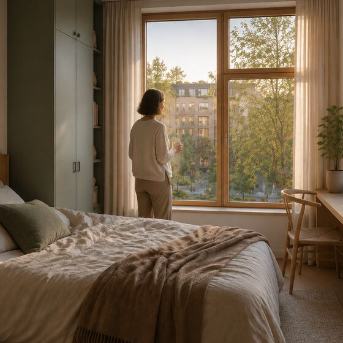
The light comes up over the river and through the birch outside the bedroom window. Derek and Susanne live on the third floor of a single-stair courtyard building in the second Scandi Block, the one with the cider-colored stair towers. Their unit faces the courtyard, so the first sounds of the day are not traffic. They are the neighbor's kettle through an open window, and a heron working the rain garden at the courtyard's low end.
Elsa, five, and Otto, three, eat breakfast at the window seat while the day gets packed behind them. The window seat turns out to be the most used piece of furniture in the home, which is the sort of thing you only learn after people move in.
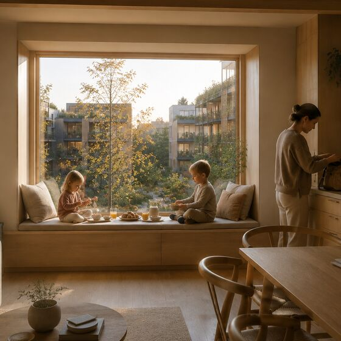
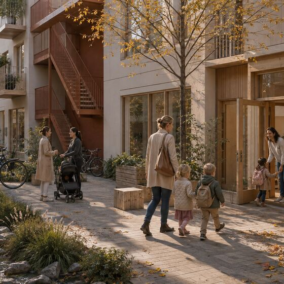
Susanne walks them down two flights, one stair and no corridor, forty seconds door to door, and across the courtyard to the children's house on the ground floor of the next building. The teachers know both kids by name and by temperament. Drop-off takes four minutes, most of it spent saying hello to other parents.
Derek walks six minutes to the circulator station at the market hall. The cabins run continuously over the river and out along the highway corridor to the robotics campus. Fourteen minutes, no parking, and he reads the whole way.
Ten years ago this commute was a car, a bridge bottleneck and a bad mood. Now the bottleneck is something he explains to the kids like a fairy tale about the old days.
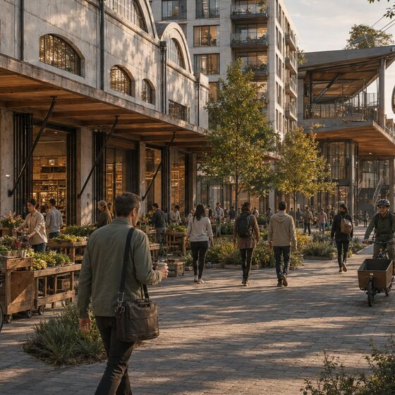
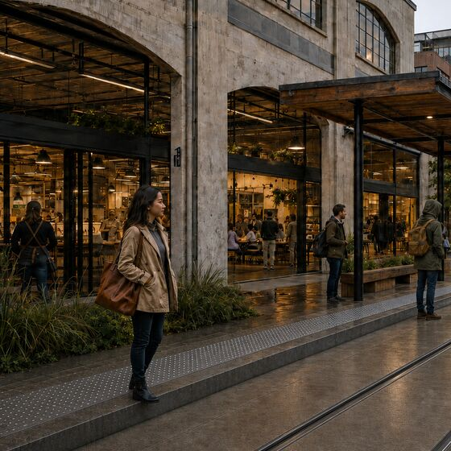
Susanne's Tuesdays are Portland days. She walks four minutes to the Front Street stop, where electric rail vehicles run on the old freight alignment past the cannery, the building that sat half empty through her first years here and is now the district's fabrication commons and food hall.
The trip makes Portland in under an hour and she preps her design review on the way. Her employer moved much of its West Coast product team to a hybrid Salem and Portland footprint once the line made the two cities feel like one labor market.
On days she is not travelling, Susanne eats at the market hall, the pillar the district calls TABLE, where half the stalls are graduates of the food business incubator in the old cannery. Her mother-in-law Carol is usually there on Tuesdays too, at the long table with the walking group.
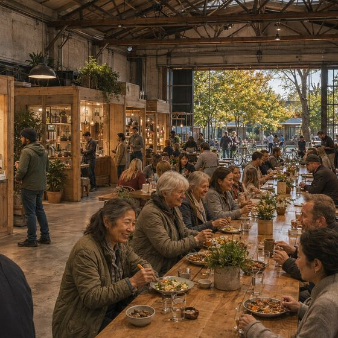
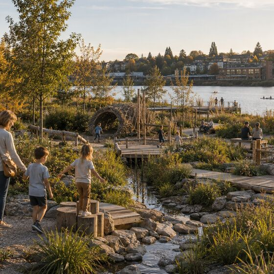
Derek's parents pick up the kids twice a week. Roger and Carol sold the split level across town in 2032 and bought a two-bedroom flat in the first Scandi Block, four hundred meters from their grandchildren. Roger, who spent thirty years telling anyone who would listen that West Salem was fifteen years from being something, now takes personal credit for all of it.
The kids go to the riverfront commons, where the play landscape is built into the restored bank.
Susanne's train glides past the cannery at dusk and she can see her own kitchen light from the platform. Derek's cabin crosses the river as the rowing club goes out. They meet at the market hall, buy dinner from two stalls, and are home by 6.15.
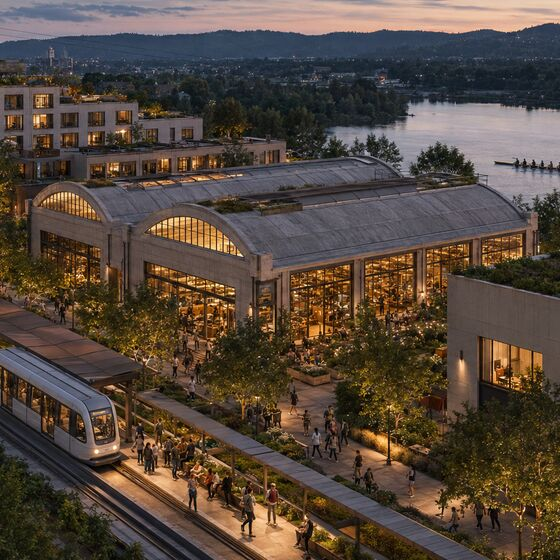
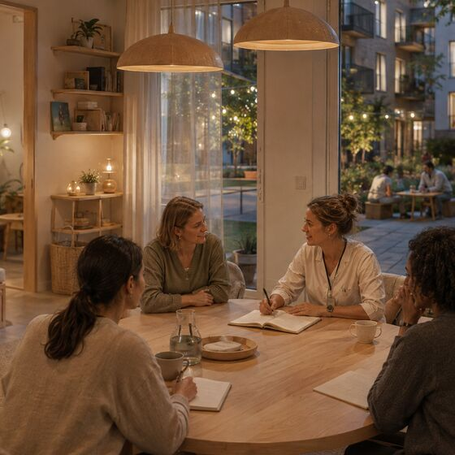
After bedtime, Susanne walks to a session at the women's and family health institute. She is one of the parent advisors this quarter. She joined originally as a patient: when Otto was born, the district's family care program assigned them a nurse who visited the apartment, knew Elsa's name, and stayed with the family through the first year.
She grew up surrounded by world-class hospitals. She tells her parents that nothing there ever felt like this.
The measure of a district is not what it looks like from above. It is whether an ordinary Tuesday is good.
Both in Salem. Derek at the robotics facility; Susanne at the institute's innovation studio, where her company, spun out of a founder cohort there, builds postpartum care tools now licensed in three states.
Portland day, and a grandparent pickup day.
Derek's early day; he coaches the six a.m. rowing juniors. Evening is the district's stage night, this month a Norwegian film series Susanne's father keeps requesting over video call.
Portland again. Carol collects the children and the walking group absorbs them for an hour.
Market day. The whole family shops the hall and the kids each get one stall choice. Dinner in the courtyard with three other families, weather permitting, which under the covered arcade means always.
Riverfront day. Kayaks in summer, the wetland boardwalk in winter. Once a month the district's stewardship crew day: Derek plants, Elsa supervises.
Slow. Sauna at the river house, and a call with Susanne's parents, who now end every call the same way: send us the listings again.
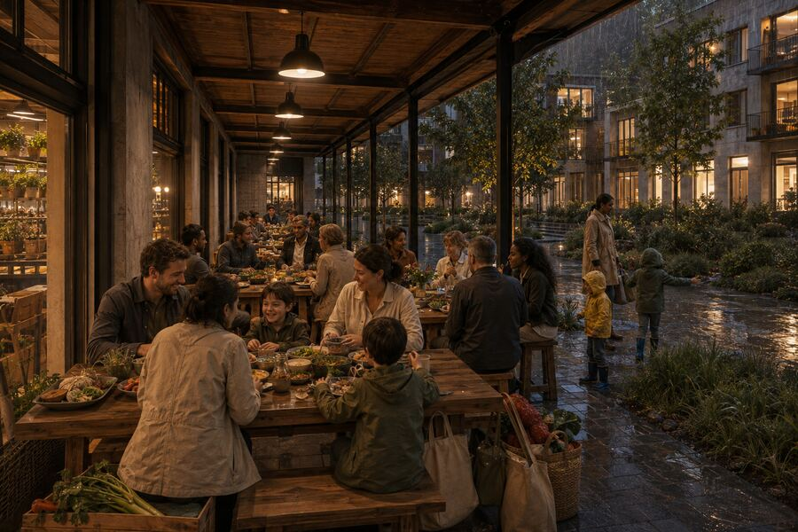
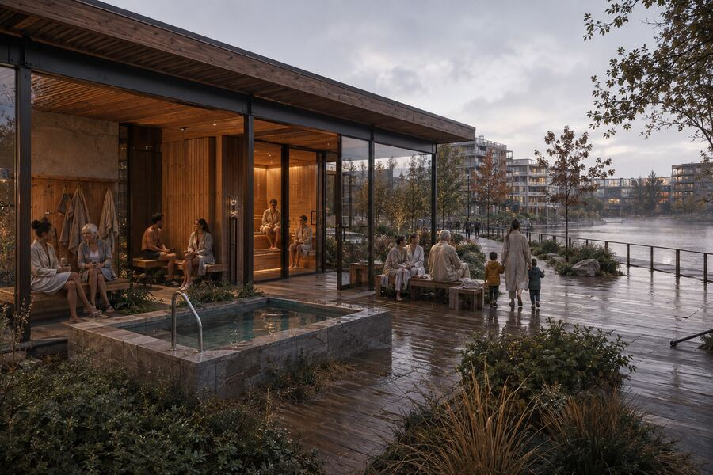
The district in this story is not built in one move. It compounds, which is the only way any of this happens.
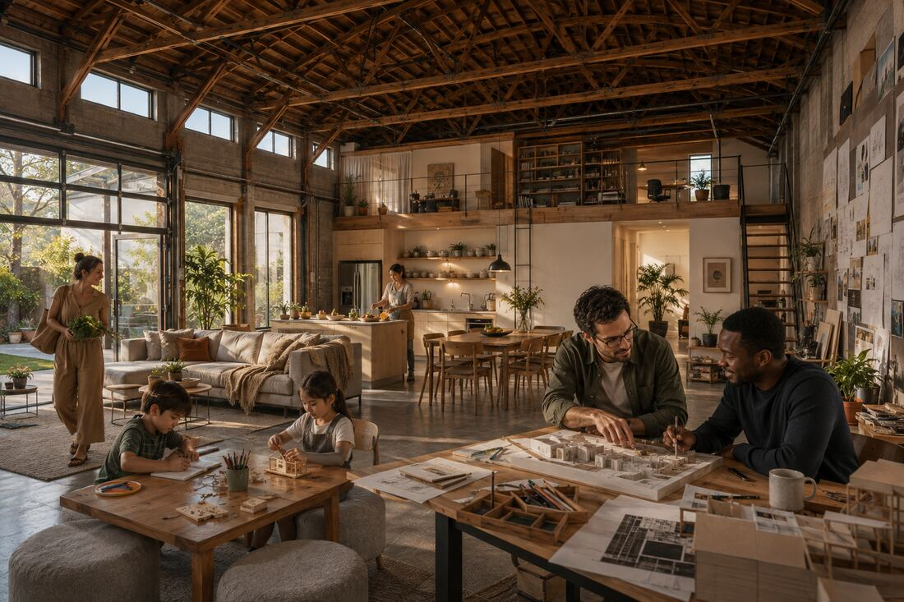
Derek and Susanne arrive when his employer scales up Salem manufacturing. Derek is coming home, a Salem kid and a West Salem High graduate, with a design-trained wife who is, frankly, skeptical. They rent in South Salem and cross the bridge every day.
The district breaks ground on the catalyst parcel. Derek drags Susanne to the open house mostly out of hometown curiosity. What she sees is not a rendering. It is a pattern book, a courtyard block she recognizes from a semester in Copenhagen, and a promise that the land came first: the rain gardens, the riverbank and the daylight studies all designed before the buildings. She puts their name on the list that night.
They move into the first Scandi Block, one of the attainable homes, priced against their actual salaries rather than a fantasy market. Elsa arrives in 2031 and Otto in 2033, both into the family care program that becomes the household's spine.
The district compounds. The market halls open. The cannery reopens as fabrication commons and food hall. The circulator to the robotics campus opens, and the Front Street line to Portland follows on the old freight alignment. Roger and Carol move in. Blocks three and four deliver, each measurably better than the last, because the buildings ship improvements to the district the way software ships updates.
Susanne leaves her job to found her company through the institute. Derek is promoted to lead a line that now supplies half the logistics industry. Their home has appreciated, but the district's shared-equity structure means the next family in can still afford the block, which is why their favorite babysitter, a teacher's aide, lives two courtyards over instead of two towns away.
Component suppliers relocate to the industrial land east of the campus, followed by an actuator startup founded by engineers who refused to leave town.
The operations and maintenance hub for the circulator sits at the Salem end of the line. A system that started as a commute solution becomes an export industry, and the corridor's success makes Salem the demonstration city other mid-size metros tour.
The institute's founder cohorts spin out six companies, Susanne's among them, and a perinatal research partnership operates from the district. Health systems send delegations the way planners once toured Portland's Pearl.
The coalition formed in the late 2020s turns the state-capital workforce, the universities and the new employers into one aligned constituency. Salem stops apologizing for not being Portland and starts being the place Portland families move to.
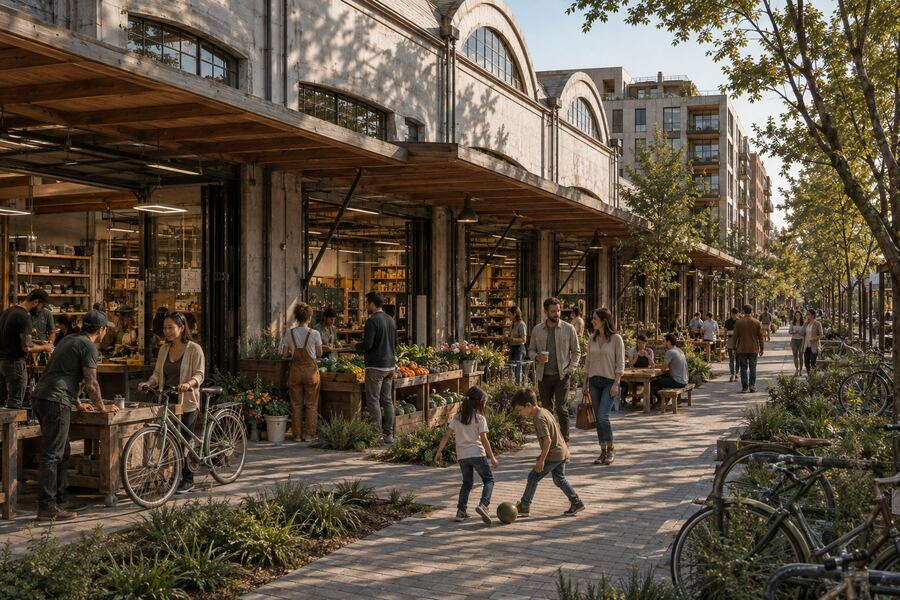
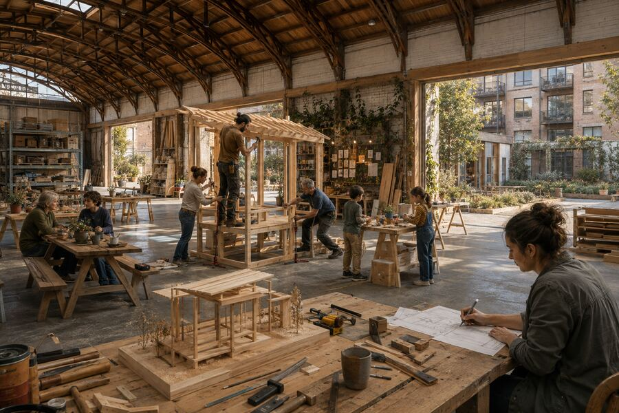
The pitch that once required imagination now requires only a train ticket.
A mid-size American city where a robotics engineer and a health-tech founder raise two kids without a second car, where the grandparents live four hundred meters away by choice, and where the riverfront that was a liability in 2026 is the reason the in-laws keep asking for listings.
2037, probably. They will say yes. Carol has already picked out their building.
Derek and Susanne do not exist. Neither does their Tuesday. This is a scenario, written to do something a masterplan cannot: check whether all the pieces on this site, the housing mix and the mobility layers and the health institute and the market hall, actually add up to a life somebody would choose.
Read it as a design tool rather than a projection. Every date is invented. No employer, institution or company has committed to anything described here, and the specific companies and partnerships that would make a decade like this real are, in 2026, conversations rather than agreements. The mobility systems in the story are concepts under study, described honestly elsewhere on this site.
What is real is the plan underneath it: the land, the phases, the partnerships taking shape, and the intent to build homes people can actually afford next to the things that make a day good. If the story reads as plausible, that is the argument. If a part of it reads as fantasy, we would genuinely like to know which part.
If you want a hand in making a day like this ordinary in Salem, we would like to hear from you.